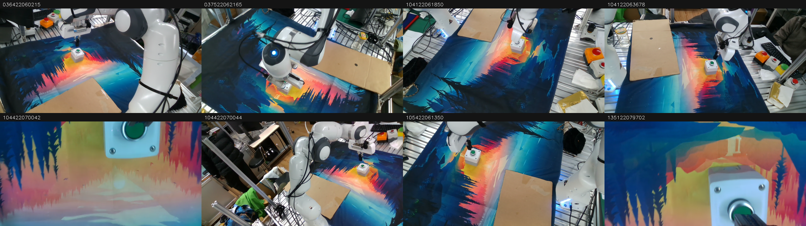

Smoke=True; lưu8 bước; đang xem index0, segment0, có5/20 targets thật. Không có target thật ở cuối segment thì mốc đó không thành sample ACT.

| File | Shape | Dtype |
|---|---|---|
| images.npy | (8, 8, 360, 640, 3) | uint8 |
| state.npy | (8, 8) | float32 |
| action.npy | (8, 8) | float32 |
| timestamps_ms.npy | (8,) | int64 |
| segment_ids.npy | (8,) | int32 |
| frame_indices.npy | (8, 8) | int64 |
| camera_timestamps_ms.npy | (8, 8) | int64 |
| state_timestamps_ms.npy | (8,) | int64 |
[0.6019284129142761, 0.022658662870526314, 0.17208901047706604, 0.13425271213054657, 0.009855733253061771, -0.9907849431037903, 0.0149772884324193, 9.999999747378752e-06]
Target bắt đầu t+1. sample.json chứa targets chưa normalize, mask và tuổi ảnh/state; is_pad=True là phần bỏ qua trong loss. Ảnh PNG giữ RGB nhìn được, không phải tensor đã normalize.
| Index | Timestamp(ms) | Segment | State vật lý8D |
|---|---|---|---|
| 0 | 1640002332500 | 0 | [0.6019284129142761, 0.022658662870526314, 0.17208901047706604, 0.13425271213054657, 0.009855733253061771, -0.9907849431037903, 0.0149772884324193, 9.999999747378752e-06] |
| 1 | 1640002332600 | 0 | [0.603717565536499, 0.021763978525996208, 0.16304689645767212, 0.1330430507659912, 0.009206311777234077, -0.9909453988075256, 0.015554794110357761, 9.999999747378752e-06] |
| 2 | 1640002332700 | 0 | [0.603717565536499, 0.021763978525996208, 0.16304689645767212, 0.1330430507659912, 0.009206311777234077, -0.9909453988075256, 0.015554794110357761, 9.999999747378752e-06] |
| 3 | 1640002332800 | 0 | [0.6043062806129456, 0.02074742130935192, 0.1591227799654007, 0.1337594985961914, 0.007848983630537987, -0.9908430576324463, 0.016637060791254044, 9.999999747378752e-06] |
| 4 | 1640002332900 | 0 | [0.60353684425354, 0.020642530173063278, 0.15898452699184418, 0.14485082030296326, 0.00969240628182888, -0.9892725348472595, 0.01625148393213749, 9.999999747378752e-06] |
| 5 | 1640002333000 | 0 | [0.6005764603614807, 0.021461782976984978, 0.15746773779392242, 0.14981937408447266, 0.011016055941581726, -0.9885206818580627, 0.016113881021738052, 9.999999747378752e-06] |
| 6 | 1640002333800 | 1 | [0.5886077880859375, 0.022851144894957542, 0.14633692800998688, 0.1619001030921936, 0.012207137420773506, -0.9864414930343628, 0.023928217589855194, 9.999999747378752e-06] |
| 7 | 1640002333900 | 1 | [0.5886077880859375, 0.022851144894957542, 0.14633692800998688, 0.1619001030921936, 0.012207137420773506, -0.9864414930343628, 0.023928217589855194, 9.999999747378752e-06] |